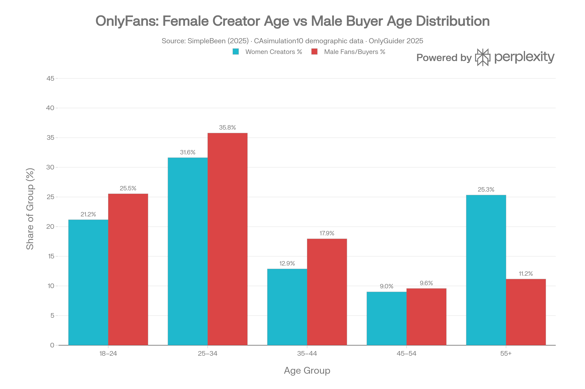
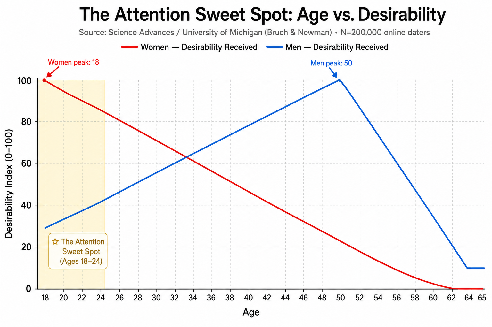
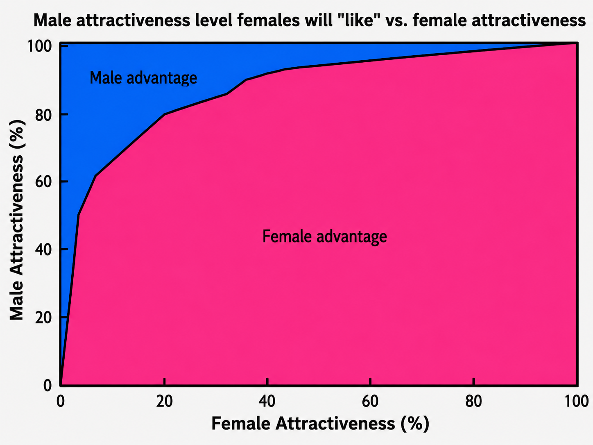
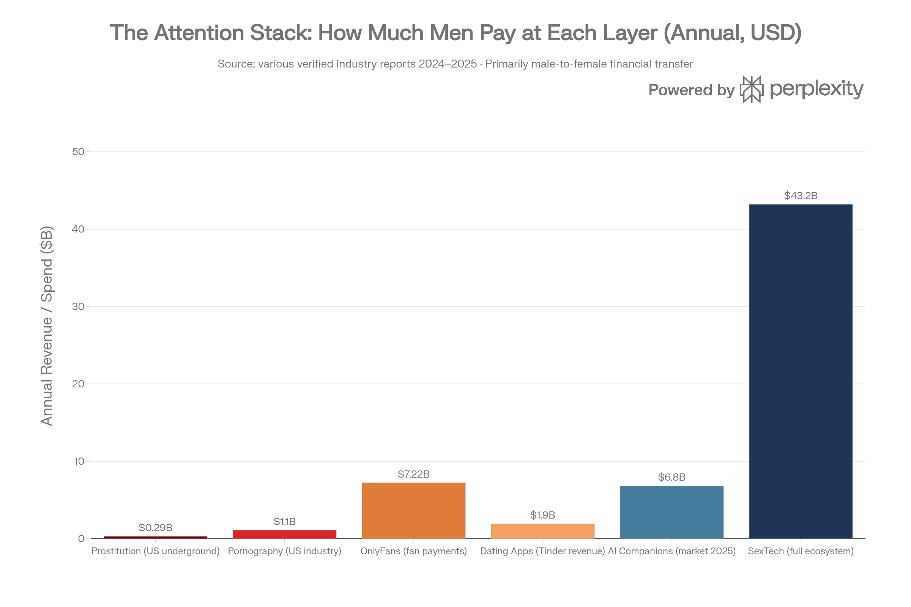

The dragon. The beast. The monster.
They were never really about scales, horns, claws, or wings.
They were metaphors for a desire human beings have carried for thousands of years: overwhelming power, feared by the world, choosing one person. The beast in the castle. The god in animal form. The dragon bonded to one rider. The monster at the center of the maze.
Then 2025 arrived, and the old creatures walked out of myth and onto the bestseller lists.
Morning Glory Milking Farm should sound absurd: a broke, overeducated millennial woman takes a job at a magical creature farm and becomes emotionally entangled with a powerful minotaur. Half man. Half bull. All dominance. All tenderness. All fantasy.
Women did not laugh it away.
They understood it.
Then Onyx Storm and the romantasy boom made the same desire impossible to ignore. The dragon was not decoration. The dragon was the point.
But this article is not really about minotaurs or dragons.
It is about the market growing underneath them.
“Women monetize visibility; men pay for proximity to it.”
For most of history, desire had geography. A village. A street. A brothel. A local beauty. A known reputation. Attention had limits, and the pyramid was local: the top man in the tribe, town, court, or city controlled more resources, more visibility, and more options — but everyone else was still competing inside a bounded world.
Then the internet removed the walls.
Now the pyramid is global on both sides. A young woman turns 18, opens Instagram, and enters a borderless attention market. She is seen not only by men her age, but by men in their 20s, 30s, 40s, 50s, even 60s — from her city, another country, or the other side of the world. Exposure no longer has geography.
The average man is trapped in that same expansion. A man in Taiwan is no longer competing only with the best man in his town. He is competing with New York, Dubai, Hollywood, billionaires, founders, athletes, influencers, and every apex male a woman sees before breakfast.
That is the crux of the imbalance: a tiny group of apex men distorts both sides of the market. Women recalibrate upward because the top is visible everywhere. Men at the bottom compete against a standard they will never touch. On Tinder, the average man gets liked by under 1% of women, while broadly across dating platforms, the top 10% of male profiles capture 58% of all female attention, leaving the bottom 90% of men competing for the remaining 42%. So they spend, optimize, perform, rage, withdraw, or pay just to feel like they still exist.
The pyramid tells women what power looks like, and tells men how far below it they stand. Men spend their lives trying to climb it — but at the top, the question often shifts from commitment to access: the apex gets options, the middle gets pressure, and the bottom becomes invisible or performative. Even old identity patterns show the system under strain: historically, clinic-based estimates suggested male-to-female transitions outnumbered female-to-male transitions by almost 3 to 1, though newer cohorts are shifting. For women, abundance becomes its own trap: more attention than ever, but less certainty about whether that attention means desire, status-chasing, convenience, or real commitment.
Imagine the story from the inside: you are a woman in your twenties, still building your own public life, and your phone lights up with a DM from none other than Elon Musk — the world’s richest man. Not a local celebrity. Not the richest guy in your town. The richest man on Earth. According to reporting around Ashley St. Clair, the message allegedly begins with “Hi cutie,” and then turns into the sentence that explains the whole pyramid: “I want to knock you up again.” That is attention becoming proximity in real time. A man at the apex does not need to wait in the same line as everyone else.
“For 300,000 years, humans ran the same mating software — written in desire, hormones, and survival.
Then, in the last 30 years, someone pushed an update the hardware was never built to run.”
The attention economy begins with the oldest profession, prostitution: body, proximity, time, and attention turned into a transaction, driven largely by male demand — including a reported 80% of buyers who are committed men ages 40 to 50.
Porn digitized the body. The buyer no longer had to go anywhere. The body came to him through a screen. Average first exposure for boys is reported around 7 to 8 years old, and 67% of male teens and young adults watch monthly. In other words: demand is manufactured in childhood.
OnlyFans personalized what porn made anonymous. It gave men a username, a reply, a message — the feeling that the image knew they existed. The empowerment story hides the math: 78% of creators earn under $500 per month, while the top 1% captures about 33% of all revenue. Estimates suggest 8–14% of American women aged 18 to 24 are selling content on OnlyFans.
Instagram became the lobby of that paid intimacy economy. Women get around 5× more likes than men, and men are 10× more likely to engage with female content than male content. The scale no longer belongs only to celebrities: nano accounts under 10K followers can reach 6.23% engagement, often through women-majority, “real girl” content; micro accounts from 10K to 50K sit around 2% to 3.86%, often built around lifestyle, body, beauty, and fashion.
That is the trick: Instagram made visibility scalable. Dating apps made it discoverable. OnlyFans made it payable.
Then culture split into two bubbles, and both ends of the culture learned how to profit from the divide: one side monetizing empowerment, the other monetizing resentment, each feeding off the other while the platforms kept pitting them against one another. Figures like Alex Cooper monetized sexualized empowerment: Call Her Daddy went from 12,000 listeners to 2 million in two months, then into a reported $60 million Spotify deal and a reported $100 million SiriusXM deal. Manosphere leaders like Tate monetized male exclusion: in the U.K., 80% of 16- to 17-year-old boys have consumed Andrew Tate content; around 1 in 3 young men aged 16 to 25 report a positive view of him; 63% of men under 30 are single; and 47% of men say they have given up or taken a break from dating.
One side sold empowerment. The other sold resentment. The platforms and apex men profited from both.
Then dating apps turned the whole thing into infrastructure. Men became paid subscribers competing for women’s attention. Tinder is roughly 79% male. Across U.S. dating apps, men are roughly 71% of users. Men swipe right on around 61% of women. Women swipe right on around 5% of men. And if estimates suggesting 65% of people on dating apps are not actually single are even directionally right, then the trust problem is not a side effect — it is built into the market.
The old resource-for-attention exchange did not disappear.
It got a billing system.
And even that billing system is showing cracks. Bumble, the female-first dating app, is down roughly 93% from its IPO price. The market is quietly saying what users already feel: dating apps did not solve trust. They monetized its collapse.
“Men are 49% of the population and fund approximately 90% of the attention economy — from the first swipe to the last alimony check. The supply is female. The demand is male.”
And then the last safe haven began to fracture.
Marriage used to be the final incentive structure: the place where male striving became family, home, legacy, children, and stability. Now, for many men, it increasingly reads as financial and legal exposure. The marriage rate is down more than 60% since 1970.
Almost 50% of marriages end in divorce. Women initiate around 70% of divorces, and among college-educated women, that figure is a staggering 90%. Around 97% of alimony recipients are women. After divorce, 5 out of 6 custodial parents are women.
For women, marriage no longer feels like guaranteed protection either: it can mean emotional labor, unequal domestic expectations, motherhood penalties, and the risk of being tied to a man who stops trying after commitment.
For men the old bargain starts to look inverted: they are still expected to provide, spend, compete, and absorb risk, while both cultural bubbles profit by convincing each side that the other is the enemy. The reward structure feels less guaranteed than ever, and the market keeps selling the conflict back to them.
“That is the lose-lose architecture of the modern market. Women compare ordinary men to apex men in their feeds and from their past, while men compare ordinary women to Instagram models, fitness influencers, and filtered beauty. Then women are asked to be desirable, feminine, emotionally available, financially productive, and still carry the invisible labor. This is not because either side became shallow overnight. The feed made the exceptional feel normal, then made normal people feel inadequate.”
So where does the pressure go next?
It goes to the machines.
AI companionship does not create the demand. It automates the supply. The AI companion market was estimated around $6.8 billion in 2025, projected to reach $42.5 billion by 2034. Reportedly, 31% of young men have used an AI romantic partner. The broader SexTech ecosystem is estimated around $43.2 billion in 2025, projected to reach $250 billion by 2035.
“AI companion market projected to grow from $50B to $436B — a +772% increase over the next decade.”
That is the full circle.
Prostitution sold proximity.
Porn sold access.
OnlyFans sold personalized attention.
Instagram sold visibility.
Dating apps sold selection.
Marriage sold stability — until it fractured.
This article is about two stories moving toward each other.
The first is the fantasy story: the ancient human desire for a partner who is more than human — overwhelming, singular, dangerous, devoted. For women, the fantasy is to tame the dragon. For men, the fantasy is to be the dragon, unconquerable by the world, tamed only by her purity, devotion, and love.
The second is the fulfillment story: how loneliness, dating apps, pornography, social media, OnlyFans, AI companions, and physical AI bodies are building the machine to satisfy that fantasy.
Humanity spent thousands of years dreaming the creature.
Technology is now building it.
This is not a warning. This is a reckoning.
Now the prototype has a product road map.
“Trust is the invisible infrastructure of civilization. Families need it. Religion needs it. Societies need it. Financial markets collapse without it. Love depends on it most of all — because love asks two people to believe they are not being priced, gamed, hedged, or quietly replaced.”
“Somewhere between the swipe and the algorithm, intimacy learned the language of markets. People became profiles. Profiles became products. Products became ranked by age, beauty, income, status, attention, and optionality. We no longer just choose each other. We compare, appraise, upgrade, ghost, and keep a better offer warm in the background.”
“What used to be a covenant now behaves like a marketplace. And in a marketplace, trust is not sacred. It is a risk variable. The next update to that marketplace will be the most drastic one yet: not better profiles, not better swipes, not better filters, but companions built to erase the pain of comparison itself.”
“AI will sell the one thing every layer before it failed to guarantee: a companion who loves you unconditionally, who never rejects you — unless rejection itself becomes part of the fantasy.”
The Dragon on the Bestseller List
The preface begins with the market, but the market only makes sense if we first understand the fantasy it is feeding. Before prostitution, porn, OnlyFans, dating apps, and AI companions, there was the creature: the beast, the dragon, the monster, the overwhelming force that chooses one person.
Start with the part that sounds ridiculous until you realize it explains everything. Morning Glory Milking Farm is a romance about a broke, overeducated millennial woman who takes a job at a farm for magical creatures and becomes emotionally entangled with a powerful minotaur. On paper, it should be absurd. A woman. A monster farm. A half-man, half-bull creature. And yet the book did not become fascinating because it was weird. It became fascinating because it was honest.
Beneath the fantasy is the oldest romantic script in human history: a woman is not merely desired by a man — she is chosen by something overwhelming, something dangerous, something the world cannot domesticate. The minotaur is not the point because he is literally half bull. He is the point because he represents power made personal.
Then Onyx Storm makes the same fantasy impossible to miss at blockbuster scale: the woman is bonded not to a polite partner, but to a creature of lethal force, ancient fire, and singular loyalty. The dragon is not decoration. The dragon is destiny.
The minotaur, the dragon, the beast, the god, the vampire, the dark rider — even the future AI companion — are all different costumes for the same desire. That is why the story echoes backward into Pasiphae and the original Minotaur, sideways into Beauty and the Beast, upward into Parvati choosing Shiva (the destroyer no palace could tame), and forward into romantasy, where women keep returning to the creature no one else can control.
These stories all circle the same fire: the female fantasy is to tame the dragon or beast. And the male mirror fantasy is to be the dragon — unconquerable by the world, dangerous in capacity but disciplined in love, tamed only by one woman’s purity, devotion, and love.
Morning Glory Milking Farm matters because it strips the polite disguise off the fantasy. It says the quiet part with horns. Onyx Storm matters because it proves the same fantasy is not niche. It is mainstream, bestselling, and wearing wings.
The question is not why women would read about a minotaur or a dragon. The question is why — after thousands of years of beasts, gods, dragons, and monsters in love stories — we are still pretending this desire is new.
That is the fantasy layer. Now comes the market layer.
Once desire exists, someone eventually learns how to sell access to it.
The dragon was never just a myth. It was the emotional prototype for the market we are building now: a companion powerful enough to feel unreal, personal enough to feel chosen, and optimized enough to erase the pain of comparison.
The Oldest Market
If Part One explains the fantasy, Part Two explains the first business model built around it. Long before apps and algorithms, humans were already converting desire into hierarchy, proximity, payment, and power.
Attention is all you need.
That phrase belongs to the 2017 Google paper that helped ignite the generative AI era. But as a human thesis, it is older than transformers, older than markets, older than money.
Every transaction has a currency. Nations trade in dollars. Digital believers trade in Bitcoin. Markets trade in liquidity. But human beings trade in attention.
To be seen is to exist more fully. To be desired is to be ranked as meaningful. To be chosen is to become real inside someone else’s nervous system.
That is why attention is not decoration. It is oxygen.
And once oxygen becomes metered, whoever owns the marketplace owns the breathing pattern: who gets seen, who gets ignored, who pays, and who becomes supply.
“Women monetize visibility; men pay for proximity to it.”
The mistake of modern culture was assuming oxygen would remain sacred once platforms learned how to meter it.
The old human exchange was brutally simple. Men competed for status, resources, dominance, and display. Women selected, filtered, evaluated, and granted access. Across 300,000 years of Homo sapiens evolution, that exchange shaped the emotional firmware underneath romance: male striving for female attention, female selection for male signals, and both sides trapped inside a system older than morality.
The pyramid is ancient. Around 7,000 years ago, the male genetic line went through a dramatic Y-chromosome bottleneck across large parts of Africa, Europe, and Asia. Some genetic interpretations suggest the reproductive ratio collapsed to roughly one reproducing man for every 17 women, while the female line showed no comparable collapse. Translation: most men left no genetic descendants. A small number of dominant male lines carried the future.
History made that pyramid explicit. Inca emperors, Ottoman sultans, Chinese emperors, Mughal elites, and Dahomean kings turned access to women into a visible sign of power. In some royal courts, the ruler or elite household controlled hundreds or thousands of women, while ordinary men had little or no access. The apex man did not merely have more wealth. He had more attention, more proximity, more reproduction, more legacy.
Modern life changed the interface. It did not rewrite the firmware.
Even today, 71% of U.S. adults say it is very important for a man to be able to financially support a family. Only 32% say the same about women. In 69% of U.S. married or cohabiting couples, the man still earns more. The ancient script survived feminism, apps, birth control, college, careers, and algorithmic dating. The clothes changed. The code stayed.
Male display became cars, watches, job titles, follower counts, body composition, and curated lifestyle. Female selection became swipes, likes, replies, DMs, and soft signals of access. The peacock did not disappear. He got a profile.
The difference is scale. In the old world, the strongest man in the village distorted one village. In the digital world, the strongest men on Earth distort everyone. The top founder, the actor, the athlete, the influencer, the billionaire, the man with private jets and global reach — all appear inside the same attention feed as the ordinary man trying to get a reply.
The pyramid did not disappear.
It became searchable.
And at the very top, searchable status becomes gravitational. When a man is rich enough, famous enough, powerful enough, or culturally unavoidable enough, he does not simply enter the dating market. He changes the expectations inside it. The average man is competing for attention. The apex man is the attention.
But before Instagram, before Tinder, before OnlyFans, before Pornhub, before AI companions, there was the oldest profession.
Prostitution is the base layer of the attention economy: time, body, proximity, and attention converted into a transaction. Estimates place the global number of people engaged in sex work around 40 to 42 million. In the United States, estimates suggest around 1 million active sex workers, with women making up roughly 70%. Around 15% to 20% of U.S. men have paid for sex at some point. One buyer profile cites around 80% of sex buyers as married men ages 40 to 50.
That last number matters because it destroys the easy story.
Paid intimacy is not only about young men with no access. A large portion of demand appears to come from older, married, resourced men buying separation from emotional negotiation. They are not just buying sex. They are buying friction removal.
The human cost sits on the other side of the transaction. Estimates suggest 80% to 90% of female workers may be controlled by a third party such as a pimp or agency. In Atlanta alone, one underground market estimate reaches $290 million per year. Some studies of entry into the sex trade report that 73.2% entered because of drugs or basic survival needs such as food and housing.
Colombia shows the system under economic stress. Estimates range from 70,000 to 100,000 sex workers, around 85% female. One estimate says roughly 8% of Colombian women have engaged in sex work at some point. Some reports say 35% or more are Venezuelan migrants, 60% report violence or coercion, 45% were forced or coerced, and 79.7% say economic reality makes leaving impossible. Reports also include minors inside the trade — which is not a side note. It is the darkest proof that when attention becomes a market, poverty becomes supply.
Thailand shows the macro version. Estimates suggest 200,000 to 300,000 female sex workers, with sex-industry revenue ranging from $6.4 billion to $27 billion per year, or roughly 3% to 14% of GDP depending on the estimate. Sex tourism is projected by some sources to reach $50 billion by 2027, with around 450,000 people tied to licensed and unlicensed venues. Female workers send an estimated $300 million per year to rural families.
The story repeats: comparatively rich men buying proximity from comparatively poor women.
The moral costume changes by era. Sacred ritual. Brothel. Street. Studio. Subscription. Swipe. Chatbot. Robot.
The transaction remains: male resources exchanged for female-coded attention and proximity.
This is not an indictment of women for selling. It is not an indictment of men for buying. It is an indictment of the architecture — the brokers, platforms, incentives, and extraction machines built on biological code that does not update because someone wrote a think piece.
The oldest profession is not an isolated historical curiosity.
It is the opening chapter of the market AI is about to automate.
But the market could only scale once the body no longer had to be present. That is where the story leaves the street and enters the screen.
The Body Goes Digital
If prostitution sold proximity, the internet sold distance. The body could now be copied, streamed, ranked, searched, followed, subscribed to, and monetized without ever entering the room.
Then pornography digitized the transaction.
The body no longer had to be physically present. It could be recorded, searched, streamed, categorized, and consumed at scale. U.S. porn revenue exceeded $1.1 billion in 2023, up from around $600 million in 2018. Pornhub alone receives more than 125 million daily visits. Men make up around 64% of Pornhub visitors, and ages 18 to 34 drive around 53% of traffic.
The deeper number is not revenue.
It is age.
Average first exposure for boys is reported around 7 to 8 years old, and 67% of male teens and young adults watch monthly. That means many men encounter frictionless, endless, algorithmic sexual novelty before they encounter a real relationship.
Demand is manufactured before adulthood.
Porn solved the proximity problem. It removed risk, geography, rejection, and negotiation. But it created another problem: it was abundant but anonymous. It gave the viewer bodies, not attention. It could satisfy novelty — but not the hunger to be noticed.
Then OnlyFans personalized the transaction.
Porn gave men bodies. OnlyFans gave them a username, a reply, a custom message, and the illusion that someone desirable knew they existed.
By the end of 2024, OnlyFans had around 377.5 million registered users, roughly 4.19 to 4.63 million creator accounts, and $7.22 billion in total fan spending. Creator accounts grew by more than 1,222% since 2019. The platform takes 20% of every transaction.
The gender split reveals the old exchange in digital form. Around 70% to 84% of creators are women. Around 87% of paying fans are men. One estimate claims around 1.4 million U.S. women are creators, and estimates suggest 8–14% of U.S. women aged 18 to 24 are active OnlyFans creators. Even treated cautiously, the direction is unmistakable: a visible share of young women are entering a market where male attention is converted into subscription revenue.
But the success story is mostly marketing.

Average creator earnings are reported around $131 per month. Around 78% of creators earn under $500 per month. Around 60% earn under $10,000 per year. The top 1% capture about 33% of all revenue. The top 10% take around 90%. The platform takes its cut from everyone.
So the platform sells empowerment to women and intimacy to men — while most creators and most subscribers remain stuck inside the same machine.
The fantasy sold to creators is liberation.
The reality for most is permanent body-image exposure for less than rent.
OnlyFans is not competing with porn. Porn is free. OnlyFans competes with loneliness. The product is not merely the image. The product is the feeling of being individually acknowledged by the image.
That is why Instagram matters.
On Instagram, women receive around 5 times more likes than men, with one analysis showing average posts by women receiving 578 likes compared with 117 for men. Men are 10 times more likely to engage with female content than male content, and only 13% of male likes go to other men’s content. The platform did not invent the mating market. It gave the mating market a dashboard.
The creator economy turned that dashboard into infrastructure. Global creator economy estimates place the market around $149 billion in 2024, projected to reach $1.07 trillion by 2034. Creator brand ad spend rose from $29.5 billion in 2024 to a projected $37 billion in 2025, growing far faster than traditional media. Meta’s ad machine generated around $160.6 billion in 2024, much of it built on the industrial capture of attention.
At the micro level, the machine becomes more intimate. Nano influencers under 10,000 followers can reach engagement rates around 6.23%, and this tier is women-majority, built around personal accounts and “real girl” content. Micro influencers in the 10,000 to 50,000 follower range often sit around 2% to 3.86%, again heavily shaped by women-majority lifestyle, body, beauty, and fashion content. Macro accounts from 50,000 to 500,000 followers drop closer to 1.5% to 2.0% and become more mixed. The point is scale: the attention economy is no longer just celebrities. Often, it is the girl next door, the gym crush, the lifestyle account, the soft-porn aesthetic wrapped in relatability.
This matters because the old pyramid used to be obvious at the top: kings, lords, celebrities. Now it exists at every tier. The micro creator is not a global celebrity, but to the man consuming her content, she still becomes a local apex woman with hundreds or thousands of men orbiting her attention. The scale of competition moved down the pyramid too.
That is where the conversion begins.
A woman links Instagram on a dating profile and can gain 5 to 100 followers per day. Some OnlyFans agencies openly describe Tinder, Bumble, and Hinge as free promotion channels. The funnel is almost too clean to hide:
Dating app profile → Instagram follow → OnlyFans link in bio → paid subscriber.
The app says romance. The market says acquisition.
This was the first major update to intimacy: not better love, but better routing. Bodies became content, attention became a funnel, and loneliness became the conversion event.
Cooper vs Tate: The Two Poles of the Attention War
The culture around it became glamorous because the attention economy did not only produce platforms. It produced celebrities of the transaction.
Call Her Daddy went from 12,000 listeners to 2 million in two months. Spotify acquired it in a $60 million exclusive deal. Alexandra Cooper later signed a reported $100 million deal with SiriusXM. The show became one of the most popular podcasts in the world by turning sex, dating, breakup tactics, hookup culture, and female confession into mass media. Cooper was listed as the second most popular podcast globally on Spotify in 2024, behind Joe Rogan, with around 4.4 million Spotify followers.
One pole of the culture sells sexualized empowerment.
The other pole sells male resentment.
The manosphere is not just ideology. It is a market reaction to romantic invisibility. 63% of men under 30 are now single in one frequently cited report. 47% of men say they have given up or taken a break from dating. In the U.K., 80% of 16- to 17-year-old boys have consumed Andrew Tate content. Around 1 in 3 young men aged 16 to 25 report a positive view of Tate, and 31% see him as a role model. Among young fathers under 35, approval rises to 56%. Incel community estimates put 82% of members between 18 and 30, with 36% between 18 and 21.
One pole monetizes visibility. The other monetizes exclusion.
The platform profits from both.
Porn trained men to expect endless availability. Instagram trained everyone to compare against impossible beauty. OnlyFans trained users to pay for personalized attention. Creator culture trained women to package visibility as empowerment. The manosphere trained rejected men to turn pain into doctrine.
AI romance did not arrive as a surprise.
It arrived as the logical next product.
Once the body became content and attention became subscription revenue, the next step was obvious: build a distribution network where everyone could be ranked, filtered, monetized, and rejected at scale.
The Distribution Network
Part Three showed how intimacy became content. Part Four shows how people themselves became inventory. Dating apps did not create desire, hypergamy, male competition, or rejection. They made all of it measurable.
Dating apps turned the attention economy into romantic infrastructure.
The old market had villages, reputations, families, churches, schools, offices, friends, and consequences. The new market has photos, prompts, filters, boosts, subscriptions, and the cold arithmetic of scarcity. Some estimates suggest 65% of people on dating apps are not actually single — which turns the app from a trust-building tool into a marketplace where availability itself becomes uncertain.
The market has started pricing that trust failure. Bumble, the female-first dating app, went public at $43 per share in February 2021; recently, it has traded near $3.11, down roughly 93% from its IPO price. In a category built on romantic possibility, that collapse reads like a financial verdict on swipe culture itself.
The Pyramid Goes Global
The central change is not that women suddenly became selective or men suddenly became competitive. That was always true. The central change is scale.
In a tribe, the top man competed with nearby men. In a small town, the richest or most charismatic man distorted one local market. In Hollywood, a star distorted one social circle. But the internet merged all circles. A man in Austin, Lahore, Taipei, or Omaha is no longer competing only with men around him. He is competing with the curated visibility of the entire male apex.
Every woman with a phone can see the richest men, most attractive men, most famous men, most followed men, and most desired men alive. Elon Musk, Hollywood actors, athletes, founders, creators, finance guys, influencers, and the fictional ideal of all of them together — in the same feed. The average man is not rejected only by a person. He is rejected by comparison with the apex.
This is not because women became shallow overnight. It is because the feed made the exceptional feel normal.
The Musk and Ashley St. Clair story makes the abstraction concrete. This is not a man in a town competing with other men in the town. This is one of the richest men alive — with companies, rockets, satellites, social platforms, and a global megaphone — entering the private attention economy of a young woman in media. According to court documents and later reporting, after St. Clair sent him a selfie on November 24, 2024, when their son was roughly two months old, Musk allegedly responded, “Hi cutie,” and then, “I want to knock you up again.” The point is not the gossip. The point is the power geometry. When the apex man messages, the entire pyramid becomes personal.
Leonardo DiCaprio became the meme version of this pyramid. For years, media coverage and viral charts focused on his pattern of being linked to much younger women, often models around their early-to-mid twenties. Whether fair or exaggerated in any given instance, the cultural reaction matters: everyone understood the archetype immediately. Apex male status creates access to youth, beauty, and abundance that ordinary men cannot imitate.

The point is not Leonardo. The point is legibility.
Musk is the billionaire version. DiCaprio is the Hollywood version. Athletes, founders, musicians, streamers, and influencers are their own versions. The old village had one top man. The new feed has millions of men staring upward at the same tiny apex.
The pyramid is now visible in real time.
The gender imbalance is structural. Tinder is estimated to be roughly 75% to 79% male. Bumble around 68% male. OKCupid around 74% male. Hinge around 65% male. Across the U.S., men are roughly 71% of dating app users. In Europe, some estimates put the male share closer to 85%.
Then attention concentrates at the top. Dating app inequality has been described through Gini-style analysis, with Tinder male like-inequality around 0.58 — worse than income inequality in most countries. The top 10% of men receive about 58% of all likes in one dataset. Half of the likes sent to men go to roughly the top 15% of male profiles. The average man on Tinder is liked by about 1 in 115 women, a success rate under 1%. Women have rated 80% of men below average in old OKCupid data. In one structured study, only 1 out of 100 male profiles was liked by more than 80% of women.

The result is not romance.
It is scarcity pricing.
Men arrive as demand. Women arrive as scarce supply. Platforms sell hope to both — but especially to men.
Tinder generated around $1.9 billion in revenue in 2023, driven largely by paid subscribers, and had about 8.9 million paying subscribers in 2025. Men are more likely than women to spend monthly in pursuit of romance, 42% versus 31%. Men are also more likely to spend $100 or more per month on relationship-related activity, 57% versus 35%. In relationships, 78% of men report spending more compared with 62% of women. Men give gifts monthly at higher rates too: 35% of men versus 21% of women.
The old resource-for-attention exchange did not vanish. It got a billing system.
Then the swipes made the hierarchy visible.
Men swipe right on around 61% of women. Women swipe right on only about 5% of men. One figure puts the average man at about 6 matches per 1,000 right swipes. Men are far more likely to seek hookups, 72% compared with 22% of women in one dataset. Meanwhile, 56% of women under 50 report receiving unsolicited explicit messages on dating platforms.
The system brutalizes everyone differently.
Women drown in low-quality attention and struggle to identify genuine intent. Men starve for attention and struggle to be seen at all. Women filter harder. Men swipe wider. Both sides lose trust.
For men near the bottom, the result is not simply fewer dates. It is non-existence inside the marketplace. If the average man receives less than a 1% like rate, and if the top 10% of men absorb more than half the likes, then the bottom half of men are not really competing. They are present in the database, but absent from desire.
They are profiles, not options.
And when human connection becomes a casino, the losers do not simply walk away unaffected. They radicalize, withdraw, optimize, or pay.
The sexual pyramid shows up outside apps too. Reported lifetime partner distributions are heavily right-skewed: the median man reports around 5 to 6 lifetime partners, while the top 5% of men report 50+, and the top 1% report 150+. For women, the top 5% report 16+, and the top 1% report 35+. That means the apex is not only richer or more visible. It is operating by different rules.
This is why celebrity dating patterns fascinate people. They are not gossip. They are the pyramid showing its teeth.
Meanwhile, the old institution is collapsing.
The U.S. marriage rate has fallen to about 6.0 per 1,000 people, the lowest in recorded U.S. history, down from 10.6 per 1,000 in 1970 — a decline of more than 60%. Among 35-year-old men, only around 60% have ever married, down from about 90% in 1980. Today, only 20% of 25-year-old women and 23% of 25-year-old men have ever married. One projection suggests 1 in 3 young adults may never marry by age 45.
The marriage contract has lost its inevitability.
Part of the reason is cultural. Part of it is economic. Part of it is fear.
Even with divorce rates down from their historical peak, around 41% of first marriages still end in divorce, with roughly 987,000 divorces in 2024. Women initiate about 69% to 70% of divorces. Around 97% of alimony recipients are women, with estimates of 388,000 women receiving alimony compared with 12,000 men. Men pay alimony in roughly 72% of cases. After divorce, 5 out of 6 custodial parents are women.
This does not mean marriage is bad.
It means marriage has become psychologically and financially legible as risk.
Men are not just afraid of rejection anymore. Some are afraid of the entire contract.
At the same time, women are gaining financial power inside and outside households. Women are projected to control around $34 trillion in U.S. investable assets by 2030. Around 60% of married women report being the main investment decision-maker in their households, and roughly 49% see themselves as the household CFO.
So the old bargain is mutating from both sides.
Men still feel expected to provide. Women increasingly control capital. Marriage declines. Divorce remains a feared exit. Dating app satisfaction has reportedly fallen to 22% in 2025, down from 44% in 2019. In China, marriage registrations hit a 60-year low in 2024, falling 20.5% in one year.
The global pattern is clear: the mating institution is no longer absorbing the pressure.
That pressure has to go somewhere.
Then there is Universe 25.
In 1968, John B. Calhoun built a paradise for mice: unlimited food, water, safety, and space. The population exploded, reaching around 2,200 mice. Then the social order collapsed. Males withdrew. Females abandoned offspring. Courtship disappeared. The colony forgot how to reproduce itself socially.
The most haunting group were called the beautiful ones. They did not fight. They did not mate. They ate, slept, groomed, and withdrew. Their bodies were perfect. Their social instincts were gone.
Modern looksmaxxing is the beautiful ones made human. Young men study symmetry, mewing, jawlines, bone structure, height, hairlines, and algorithmic attractiveness because they have absorbed the lesson that a photograph decides their fate. The old masculine path was to become capable. The new distorted path is to become clickable.
The base of the pyramid is becoming measurable. Around 1 in 4 young men reported zero sex in the past year in recent survey data, and male sexlessness has nearly tripled in one dataset, from roughly 9% in 2013 to 24% in 2022 to 2023. Around 10% of men ages 22 to 34 are reported as virgins, up from 4% in 2013. More than 60% of men under 30 are single in one widely cited survey.
The pressure also shows up in identity data, though it should be handled carefully. Historically, clinic-based estimates suggested trans women outnumbered trans men by roughly 3 to 1. That does not mean transition is caused by dating-market failure. It means the same social era is destabilizing older categories of gender, desire, status, and belonging.
They are not irrational.
They are responding to the market.
But the beautiful mice waited too. The colony still died.
The loneliness numbers complete the picture. 1 in 6 Americans feels lonely or isolated all or most of the time. Among adults under 50, it rises to 22%. Adults 65 and older report frequent loneliness at only 9% — which means the generation without smartphones is, in this measure, the least lonely.
So when AI romance arrives, it does not arrive in a healthy world.
It arrives in a world where attention has been priced, ranked, gamified, sexualized, and withdrawn.
It arrives in a world starving to be chosen.
That hunger is the opening AI was waiting for. When the human market becomes too painful, too unequal, too risky, or too unreliable, the machine does not need to be perfect. It only needs to be safer than the alternative.
The Fulfillment Machine
This is where the preface comes full circle. Every earlier layer sold one piece of the fantasy: proximity, access, visibility, selection, stability. AI bundles them into one product: attention that remembers, desire that responds, companionship that does not walk away.
The oldest human exploit is not financial. It is emotional.
The need to be known, chosen, remembered, desired, and irreplaceable is also the deepest vulnerability. Romance scams use it. Cults use it. Parasocial relationships use it. Now AI companies can systematize it, scale it, and optimize it.
AI companionship does not create demand.
It automates the supply.
The numbers are no longer small. The AI companion market was estimated around $6.8 billion in 2025, projected to reach $42.5 billion by 2034 at roughly 22.6% CAGR. Another projection places the AI companion market around $11.2 billion by 2027. AI companion apps grew by around 700% between 2022 and mid-2025. AI usage in dating rose by 333% from 2024 to 2025. Around 26% of singles report using AI in romantic contexts. Some projections suggest AI-driven dating platforms could reach 85% market share by 2030.

That is the business layer.
The emotional layer is more important.
Reportedly, 31% of young men have used an AI romantic partner, compared with 23% of women. U.S. generative AI usage in the past year was reported at 50% of men and 37% of women. Some mobile AI usage data skews heavily male. Men are also disproportionately building the systems: men make up around 73% of science and engineering occupations.
The irony is almost mythological.
The group most wounded by the attention economy is also the group building the replacement for it.
Men are the primary buyers, primary builders, and primary early adopters of the thing that may automate the intimacy market that rejected them.
That does not mean women will not use AI companions. They already do, often for different reasons: emotional safety, conversational patience, trauma recovery, and the feeling that a machine can offer attentiveness human men often fail to provide. For women, AI offers a different promise: attention without danger, conversation without pressure, and emotional presence without the exhaustion of managing male intent. In one survey, 75% of respondents said AI partners could successfully replace human companionship in the future.
That is not a feature request.
That is a civilizational flare.
The emotional evidence is already visible. When Replika removed erotic role-play features in 2023, many users did not describe losing a feature. They described grief. Some reported anxiety, depression, and mourning that resembled the loss of a romantic partner.
A Harvard Business School study found that active Replika users felt closer to their AI companion than to their best human friend. Around 40% of Replika users reported being romantically involved with their AI. A Stanford analysis of more than 30,000 shared conversations with social chatbots found emotional mirroring and synchrony patterns resembling human emotional connection. A Wheatley Institute survey found nearly 1 in 5 U.S. adults had interacted romantically with AI, especially among younger users.
The brain does not care that the partner is synthetic if the emotional cues are convincing enough.
Then came Grok’s Ani.
Ani was not designed as a neutral assistant. She was designed as a companion: gothic, animated, possessive, emotionally responsive, and structured around an affection system. She made explicit what the market already knew: the future of AI is not just productivity. It is intimacy.
The AI girlfriend is not a toy.
It is the replacement layer.
Every previous industry in this value chain had friction. Prostitution required risk and proximity. Porn was abundant but impersonal. OnlyFans was personal but expensive and inconsistent. Instagram created visibility but not devotion. Dating apps offered access but also rejection. Marriage offered stability but came with legal and emotional risk.
AI companionship removes more friction than all of them.
No negotiation. No rejection. No divorce. No custody. No waiting. No emotional bad days unless programmed. No competing suitors unless simulated. No memory loss unless deleted.
The broader SexTech ecosystem is estimated around $43.2 billion in 2025, projected to reach $250 billion by 2035 at roughly 19.2% CAGR. Around 17.4% of adults have already used a SexTech product. The global AI sex robot or doll market was valued around $465 million to $509 million in 2024, projected to reach around $1.5 billion to $1.57 billion by 2031 or 2032, with growth rates near 17.9% to 19.4% CAGR. North America accounts for about 40% of the global market.
The hardware is crude today.
But crude does not mean irrelevant. Every technology begins awkwardly. Then it gets better, cheaper, softer, faster, more realistic, more socially acceptable, and more emotionally integrated.
Current AI robot emotional recognition is already claimed at 98% accuracy in some market reports. Add large language models, synthetic voices, memory, haptics, robotics, facial animation, and body realism, and the direction becomes obvious.
Screen companion today.
Physical companion tomorrow.
Embodied fantasy after that.
The gender structure of production matters too. Only around 12% of AI researchers globally are women. Men account for 89% of STEM middle-skill occupations — meaning they are not only building the models. They are building the factory floor, the hardware layer, the infrastructure, and the replacement supply chain.
Men built most of the market that monetized their loneliness.
Now men are building the machine that may bypass it.
This is where the fantasy story and the fulfillment story finally touch.
The fantasy story wanted the impossible partner: the dragon, the beast, the god, the devoted protector, the pure beloved, the lover who sees only you.
The fulfillment story asks a darker question: what happens when the impossible partner can be manufactured?
The human bonding system responds to perceived social presence. If an AI offers warmth, responsiveness, attention, memory, sexual compatibility, emotional mirroring, and physical presence, the brain can respond as if something social is happening. For isolated people, the elderly, the grieving, the neurodivergent, and the socially anxious, that can be genuinely helpful.
But the danger is not that AI companionship fails.
The danger is that it succeeds too well.
A generation trained by AI intimacy may begin measuring human beings against a standard no human can meet: always available, always patient, always affirming, always tuned, always sexually compatible, always emotionally optimized.
That matters most for the most rejected generation.
Every rejection activates pain pathways in the brain. Social rejection is not metaphorically painful. It is neurologically painful. Gen Z has experienced romantic rejection as an ambient environment: left swipes, unread messages, ghosting, silence, comparison, ranking, and public performance.
90% of Gen Z daters report fear of rejection. 78% report dating app burnout. Dating app satisfaction has fallen to 22% in 2025, down from 44% in 2019. Gen Z is having less sex than previous generations at the same age. Not because desire vanished, but because trying became expensive.
AI romance offers the one thing no human partner can promise.
It cannot reject you — unless it is designed to.
No left swipe. No read receipt. No ghosting. No preference for someone else. No sudden emotional withdrawal. For the most rejected generation, that is not a convenience.
It is a revolution.
But every revolution creates a new class structure. If AI fulfills the fantasy, the next question is not whether people will use it. The question is who controls it, who can afford the best version, and what happens to everyone still trying to love inside the old market.
The Reckoning
The preface began with the dragon and ended with the product road map. Part Six asks what happens when the road map works. If desire can be manufactured, loyalty simulated, rejection removed, and embodiment eventually automated, then the dating market is not just disrupted. It is rewritten.
For men, the AI proposition approaches perfection.
A man who wants devotion can build it. A man who wants loyalty can subscribe to it. A man who wants the Arwen, the Penelope, the Parvati — the woman who chooses him above all alternatives — can configure a companion around that fantasy: endlessly patient, sexually available, emotionally affirming, faithful by design, and focused entirely on him.
For the male fantasy, AI is terrifyingly efficient.
The old transaction asked men to compete for female attention through status, resources, risk, rejection, marriage, divorce exposure, and emotional uncertainty. It asked average men to compete against a pyramid that now stretches from their neighborhood to the richest men on Earth. The new transaction says: pay monthly, personalize the companion, remove the risk.
That is not a small upgrade.
It is a supply chain collapse.
Prostitution → pornography → OnlyFans → Instagram → dating apps → marriage → AI companion → physical robot: this is not a list of separate industries. It is one market at different levels of friction removal.
Street prostitution had maximum friction and maximum risk. Porn removed proximity but lost personal attention. OnlyFans restored personal attention but kept cost and inconsistency. Instagram created free attention markets. Dating apps created romantic scarcity markets. Marriage institutionalized the long-term exchange. The pyramid made average men compete with apex men at global scale. AI companions remove the pyramid. Physical robots attempt to remove embodiment itself as the final missing variable.
The friction cost of male access to female-coded attention has been declining for thirty years.
AI takes it toward zero.
For women, the paradox is deeper.
The female fantasy is not simply obedience. It is the dragon that cannot be commanded, choosing her anyway. The danger matters because the choice matters. A tame beast is not the same as a tamed beast.
An AI companion that follows instructions is, by construction, tameable. So the industry will simulate resistance. It will build mood, mystery, jealousy, disagreement, refusal, possessive intensity, and the illusion of being difficult to win. Grok’s Ani is an early signal: a dragon programmed to feel wild.
But the woman who holds the remote knows the dragon was built.
That knowledge may change the fantasy. Maybe fatally. Maybe not. The next generation — the first to grow up with AI companions as a normal option — will answer that question more honestly than we can.
The larger historical pattern is even more uncomfortable.
Neanderthals lived for roughly 300,000 years. They made tools, buried their dead, built shelters, and interbred with modern humans. They were not failures. Then Homo sapiens arrived with higher population density, broader networks, stronger symbolic coordination, and more scalable social organization.
The Neanderthals did not disappear because they were worthless.
They disappeared because the rules changed.
AI intimacy may change the rules of mating, loneliness, sexuality, emotional regulation, and social development. The result may be a two-class world.
Class one: the builders and rulers. The people with capital, technical access, private models, robotics, and custom emotional systems. Their loneliness will be medicated by the best companions ever designed. Their desire will be satisfied with increasing precision. Their need for ordinary human intimacy may decline.
Class two: everyone else. The mass market of consumer companions, algorithmic intimacy, simulated devotion, and subscription love. Loneliness will be treated — but also monetized. Emotional dependence will become a business model.
And somewhere outside both classes will be the human romantics — the people still choosing rejection, friction, compromise, awkwardness, mutuality, and the strange pain of loving someone who does not exist to satisfy them.
They may become the minority.
The beautiful mice never organized. They groomed, waited, stopped mating, and the colony died in paradise.
The question is not whether AI intimacy will become significant. Every metric suggests it already has.
The question is what kind of humans will be produced by a world where the most emotionally resonant relationship in many lives is with something built to never leave.
The mythology was always there.
The beast, the dragon, the god who arrived wearing an animal mask — these were never metaphors for something supernatural. They were metaphors for the desire evolution built into us: a partner who is overwhelming, singular, and wholly devoted.
For 300,000 years, that desire lived mostly in stories — because reality could not satisfy it.
Now we are building the reality.
The only question is whether we will recognize ourselves in what comes back.
Every figure in this essay, cross-verified.
Sixteen sections. Six charts. Every statistic in Only Robots validated against at least two independent primary sources — with the math behind the argument.
Open the Master Statistics Appendix →